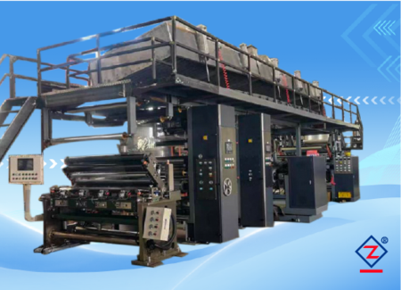
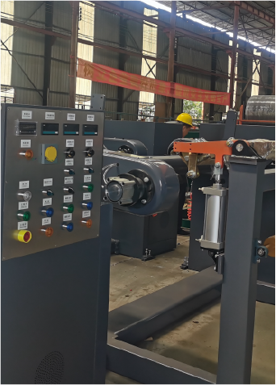
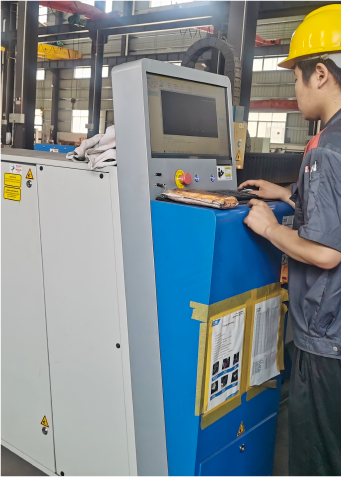

Màng chức năng
Phủ keo, phủ UV, phủ bảo vệ
Cần xác nhận loại keo, độ nhớt, lượng phủ, nhiệt sấy và yêu cầu bề mặt sau phủ.
Đọc ứng dụng phủ vi lõmThiết bị cho màng chức năng, màng PVC/PET/BOPP/PP cần lượng phủ ổn định, bề mặt đều, sấy tốt và thu cuộn liên tục.

Máy phủ vi lõm phù hợp khi sản phẩm cần lớp phủ mỏng, đều và ổn định trên vật liệu dạng cuộn. Cấu hình phải chọn theo vật liệu nền, loại keo/lớp phủ, độ nhớt, lượng phủ, sấy, UV và yêu cầu bề mặt sau phủ.
| Vật liệu phủ | PVC, PET, BOPP, PP, màng mềm, màng chức năng. |
|---|---|
| Sản phẩm đầu ra | Màng phủ keo, màng UV, màng chức năng, màng cảm giác da, vật liệu ghép lớp. |
| Khổ phủ | 500 - 2000 mm |
| Tốc độ máy | 5 - 40 m/phút |
| Điều khiển lực căng | Tự động |
| UV curing | 3 bộ đèn UV |
| Nguồn điện | 380 V + N, 50 Hz |
| Tổng công suất | Gia nhiệt dầu truyền nhiệt: 105 kW; gia nhiệt điện: 225 kW |
| Truyền động | Động cơ servo, kết nối truyền động qua hộp giảm tốc. |
|---|---|
| Hệ thống lực căng | Điều khiển lực căng kỹ thuật số toàn tuyến, có thể tinh chỉnh thủ công. |
| Cụm phủ vi lõm | Dùng cho lớp phủ mỏng, đều và ổn định; cấu hình trục phủ cần xác nhận theo độ nhớt keo, lượng phủ và bề mặt vật liệu. |
| Nối liệu | Hai trạm, xả/thu cuộn tích hợp, đổi liệu không dừng máy, tự động điều khiển lực căng. |
| Điều khiển vận hành | PLC toàn tuyến, tủ điện tập trung, đồng bộ biến tần kỹ thuật số, màn hình cảm ứng HMI. |
| Điều khiển nhiệt | PID kỹ thuật số độc lập, buồng sấy kín hiệu suất cao, chia nhiều nhóm nhiệt để gia nhiệt đều. |
| Gia nhiệt | Có thể chọn khí gas hoặc dầu truyền nhiệt tiết kiệm điện. |
| An toàn | Nút dừng khẩn cấp và thiết bị bảo vệ an toàn. |
| Khác | Canh biên servo siêu âm; xả cuộn phẳng hai trạm; thu cuộn trung tâm hai trạm. |
Người mua nên gửi mẫu vật liệu và yêu cầu bề mặt, vì lớp phủ mỏng hay dày sẽ ảnh hưởng trực tiếp đến trục phủ, sấy và tốc độ.
Cần xác nhận loại keo, độ nhớt, lượng phủ, nhiệt sấy và yêu cầu bề mặt sau phủ.
Đọc ứng dụng phủ vi lõm
Phù hợp cho màng PVC, PET, BOPP, PP và vật liệu mềm cần lớp phủ đều.
Xem dây chuyền phủ keo
Điểm khó của phủ keo là cân bằng lượng phủ, sấy, lực căng và bề mặt thành phẩm.
Xem checklist hỏi giáMáy phù hợp khi cần lớp phủ mỏng, đều và ổn định trên màng PVC, PET, BOPP, PP hoặc màng chức năng. Nếu lượng keo lớn hoặc vật liệu đặc biệt, cần kiểm tra lại phương thức phủ.
Nên gửi loại keo, độ nhớt, hàm lượng rắn, lượng phủ mong muốn, yêu cầu sấy/UV, bề mặt vật liệu và hình thành phẩm.
Có thể tư vấn cấu hình UV theo sản phẩm. Dòng tham khảo có 3 bộ đèn UV, nhưng cấu hình thực tế cần xác nhận theo vật liệu, lớp phủ và tốc độ sản xuất.
Nên gửi mẫu vật liệu, loại keo/lớp phủ, khổ rộng, độ dày, tốc độ mong muốn, yêu cầu sấy, yêu cầu UV và quy trình sau phủ như ghép, thu cuộn hoặc xẻ cuộn.
| Vật liệu nền | Cho biết loại vật liệu chính, ví dụ PVC, PET, BOPP, PP, màng mềm, màng chức năng hoặc vật liệu phủ đặc biệt. |
|---|---|
| Keo/lớp phủ | Gửi loại keo, độ nhớt, lượng phủ, yêu cầu UV và yêu cầu bề mặt sau khi phủ. |
| Khổ rộng | Gửi khổ vật liệu đầu vào và khổ thành phẩm mong muốn. |
| Sấy và gia nhiệt | Cho biết yêu cầu sấy, nhiệt độ tham khảo, dung môi nếu có và điều kiện thông gió của nhà xưởng. |
| Tốc độ mong muốn | Nêu tốc độ sản xuất dự kiến hoặc sản lượng mỗi ngày. |
| Quy trình sau phủ | Ghép màng, thu cuộn, xẻ cuộn, đóng gói hoặc đưa vào dây chuyền tiếp theo. |